Logistic Regression#
Confusion Matrix#
Q1: Which cells show the correct predictions
Q2: Now where do we put… TN TP FN FP?
| Predicted | |||
|---|---|---|---|
| Negatives | Positives | ||
| Actual | Negatives | ||
| Positives | |||
Confusion Matrix#
Q1: Which cells show the correct predictions
Q2: Now where do we put… TN TP FN FP?
| Predicted | |||
|---|---|---|---|
| Negatives | Positives | ||
| Actual | Negatives | TN | FP |
| Positives | FN | TP | |
Classification metrics#
Q3: Which classification metrics do you remember?
Metric |
Value |
|---|---|
Accuracy |
\({\frac{130}{200}}=0.65\) |
Precision |
\({\frac{70}{110}}=0.64\) |
Recall |
\({\frac{70}{100}}=0.7\) |
F1-Score |
\(2\cdot \frac{\text{Precision} \cdot \text{Recall}}{\text{Precision} + \text{Recall}}=\frac{2}{3}\) |
ROC AUC |
|
Classification metrics#
Q3: Which classification metrics do you remember?
Metric |
Value |
|---|---|
Accuracy |
\({\frac{130}{200}}=0.65\) |
Precision |
\({\frac{70}{110}}=0.64\) |
Recall |
\({\frac{70}{100}}=0.7\) |
F1-Score |
\(2\cdot \frac{\text{Precision} \cdot \text{Recall}}{\text{Precision} + \text{Recall}}=\frac{2}{3}\) |
ROC AUC |
|
Q4: What are the values?
| Predicted | |||
|---|---|---|---|
| Negatives | Positives | ||
| Actual | Negatives | 60 | 40 |
| Positives | 30 | 70 | |
Accuracy - Rate of correct predictions - (TP+TN) /(TP+TN+FP+FN) = # correct predictions / # all predictions
Precision - How precise does a model predict positives - TP / (TP+FP) = # correct positives / # all positives
Recall/Sensitivity/TPRate - How many % of the patients will be recalled / How sensitive is the model - TP / (TP+FN) = # correct positives / # actual positive
F1-Score - Harmonic mean between Precision and Recall - 2x (P*R) / (P+R)
ROC AUC - area under ROC curve; parameter: threshold
Classification metrics#
Q3: Which classification metrics do you remember?
Metric |
Value |
|---|---|
Accuracy |
\({\frac{130}{200}}=0.65\) |
Precision |
\({\frac{70}{110}}=0.64\) |
Recall |
\({\frac{70}{100}}=0.7\) |
F1-Score |
\(2\cdot \frac{\text{Precision} \cdot \text{Recall}}{\text{Precision} + \text{Recall}}=\frac{2}{3}\) |
ROC AUC |
|
Q4: What are the values?
| Predicted | |||
|---|---|---|---|
| Negatives | Positives | ||
| Actual | Negatives | 60 | 40 |
| Positives | 30 | 70 | |
ROC Curve#
Q5: What is the threshold?
Q6: When would you change it?
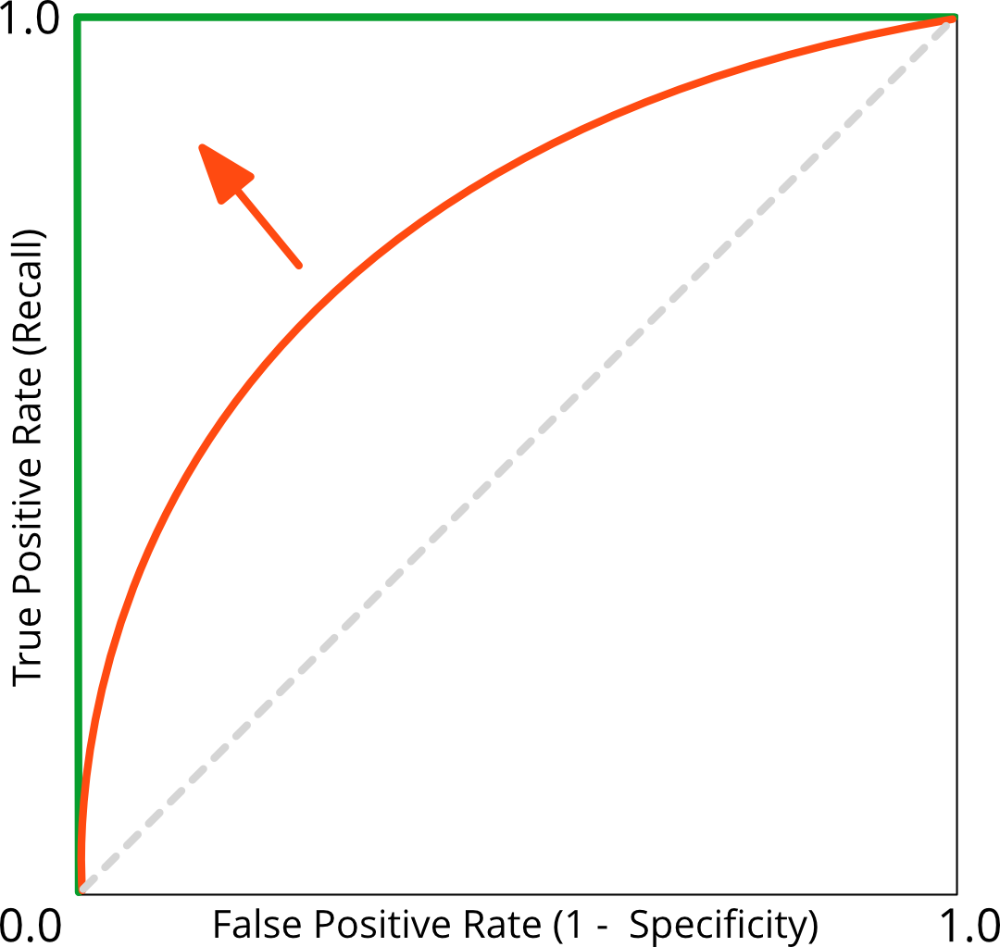
Improving the recall, TP / (TP+FN) = missing no patient, by altering the threshold goes along with:
a worsening (increase) in false alarms, called false positive rate, because there will be more FP.
Logistic Regression#
Classification#
Some real-world classification examples:
Email: spam vs not spam
Medical: malignant vs benign tumor
Quality check: healthy bee vs not healthy bee
Sentiment: happy vs sad review
Content moderation: toxic vs not toxic
Auth: genuine user vs impersonator
Product: churned customer vs retained customer
PM Analogy: Every time you define an acceptance criteria — “this user is high-risk” or “this content is inappropriate” — you are defining a classification problem.
In (binary) classification the model predicts one of two possible outcomes:
Class 0: the negative class (not spam, not fraud, not churn)
Class 1: the positive class (spam, fraud, churn)
PM Analogy: Think of it like a gate: a user either qualifies for a premium feature or they don’t. The model makes that yes/no decision for you at scale.
Why classification?#
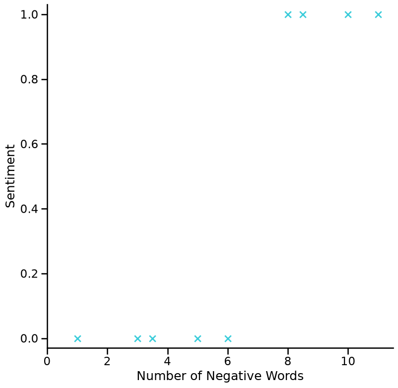
Why do we need another (classification) algorithm if we have linear regression?
Why not just use Linear Regression for Classification?#
Linear regression predicts a continuous number (e.g., price, temperature).
But for classification, we need a yes/no answer.
Applying linear regression directly to classification leads to unreliable boundaries — especially when outliers are present.
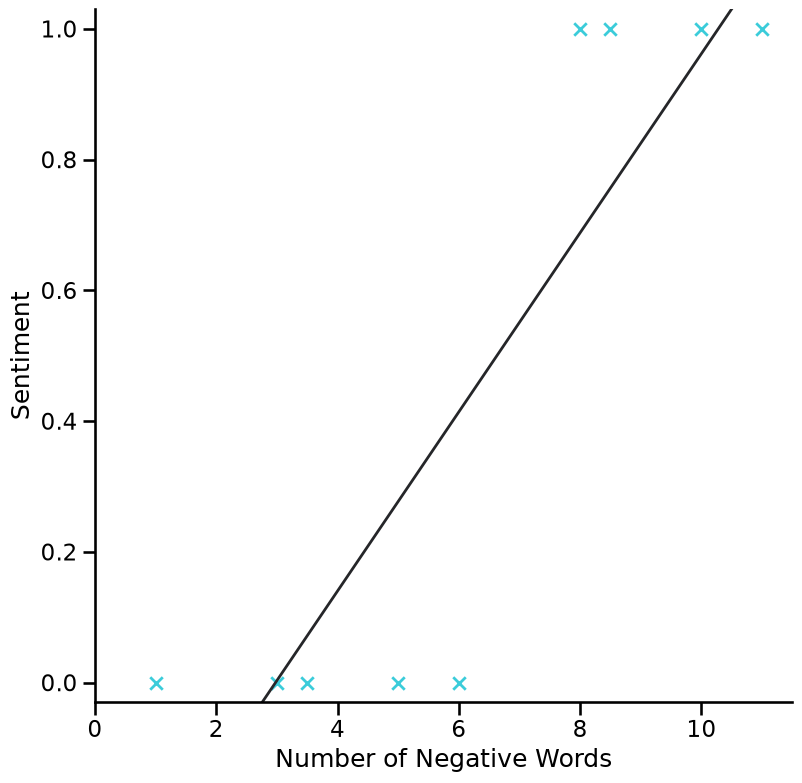
Why classification?#
We can still use the linear line as a rough boundary:
If predicted value ≥ 0.5 → predict “sad” (class 1)
If predicted value < 0.5 → predict “not sad” (class 0)
But the big problem: predictions can go above 1 or below 0, which makes no sense as a probability.
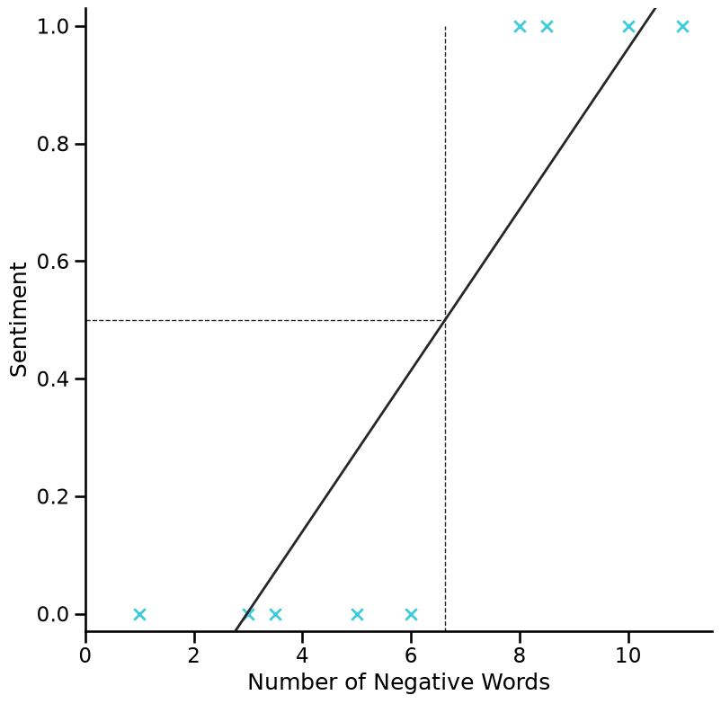
Why classification?#
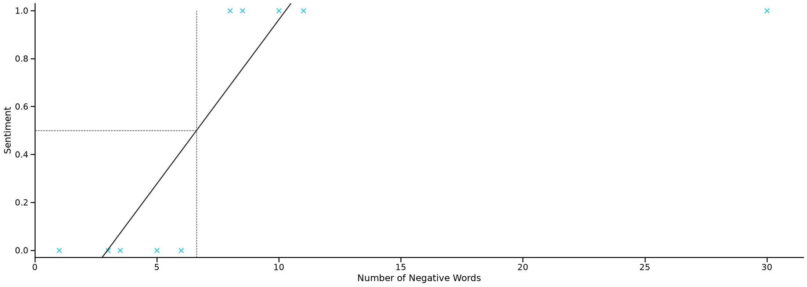
Why Classification?#
Applying linear regression to a classification problem is usually not a great idea
The boundary shifts dramatically with outliers — the model is not robust
PM Analogy: Imagine using a revenue forecast model to decide who is a “high-value” customer. A single whale customer would distort your threshold. You need a model built specifically for yes/no decisions.
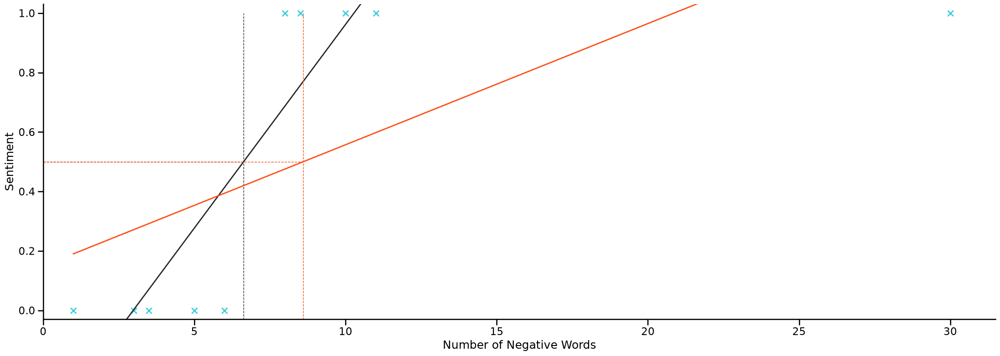
Another problem of classification with linear regression#
Labels are always 0 or 1 — but a linear model can output values far outside that range (e.g., -2.3 or 5.7)
We need a model whose output always stays between 0 and 1 — that’s a probability
This is exactly what Logistic Regression solves
Logistic Regression Model#
What we want from a classification model:
Output a probability between 0 and 1
We can then decide: if probability ≥ 0.5 → classify as “yes” (class 1)
Key idea: Logistic Regression “squeezes” any input into the (0, 1) range using a special S-shaped function called the sigmoid (or logistic) function.
Linear regression predicts a number anywhere on the number line — no limits.
Logistic regression wraps that prediction inside a sigmoid function so the output is always a probability between 0 and 1.
Logistic regression hypothesis:
predicted probability = sigmoid( weighted sum of features )
The sigmoid function maps any value → a probability between 0 and 1.
The Sigmoid (logistic) function takes any number and maps it into (0, 1).
You don’t need to memorize this — just remember: it squishes any value into a probability.
The Logistic (Sigmoid) Function#
Key properties of the sigmoid function:
Always outputs a value between 0 and 1 → interpretable as probability
Very negative input → output close to 0 (confident “no”)
Very positive input → output close to 1 (confident “yes”)
Input = 0 → output = 0.5 (uncertain, right at the boundary)
PM Analogy: Think of the sigmoid as a confidence meter. The model takes all available features and converts them into a single confidence score between 0% and 100%.
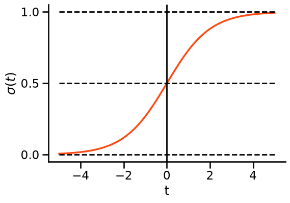
From logistic function to logistic regression#
The sigmoid outputs a probability between 0 and 1 — that’s our prediction
The model learns a set of weights (parameters
b) that define which features matter and how muchOnce weights are learned, we can classify any new observation
PM Analogy: The weights are like a scoring rubric. Some signals (e.g., number of complaints) carry more weight than others (e.g., account age). The model learns the optimal rubric from data.
Explore the sigmoid function#
Try changing the parameters b0 (shifts the curve left/right) and b1 (controls steepness) below.
b0 controls the decision point — at what feature value does the model flip from 0 to 1?
b1 controls confidence — a steeper curve means the model is more decisive
import numpy as np
# create the sigmoid function
def sigmoid_function(t):
"""Calculates p for given t"""
p = 1 / (1 + np.exp(-t))
return p
# create the logit function
def logit_function(x, b0, b1):
"""Caluculates the border"""
t = b0 + b1 * x
return t
b0 = 0
b1 = 0.2
x = np.arange(-50, 50, 1)
t = logit_function(x, b0, b1)
p = sigmoid_function(t)
plt.plot(x, p, color=c_dark)
plt.vlines(x=-b0 / b1, ymin=0, ymax=1, color=c_blue, linestyle="--", linewidth=1.2)
plt.hlines(y=0.5, xmin=-50, xmax=-b0 / b1, color=c_light, linestyle="--", linewidth=1.2)
plt.show()
Explore the sigmoid function — Key Takeaways#
The output of the sigmoid is always a probability between 0 and 1
b0 shifts the curve → moves the decision boundary (where the model “switches”)
b1 controls steepness → steeper = more decisive model
Negative b1 → flips the curve (high feature values now predict class 0 instead of class 1)
PM Analogy: You can tune these parameters to match your business logic. For fraud detection, you might want a very sharp boundary — any transaction above a certain risk score gets flagged immediately.
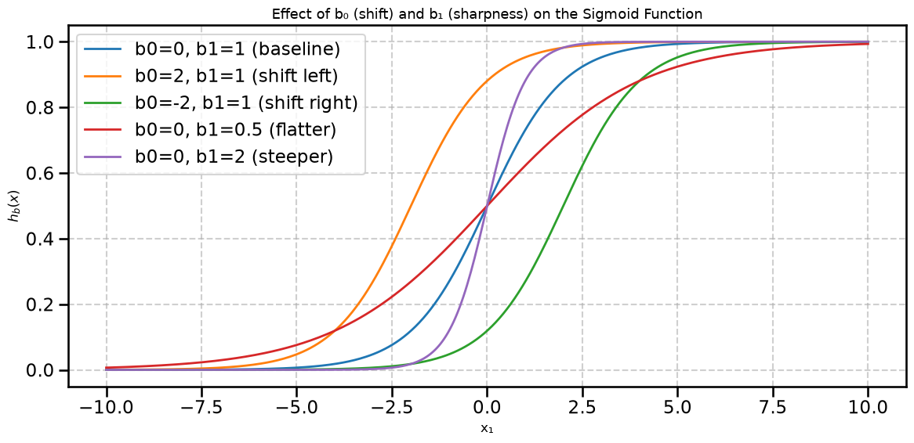
Interpretation of the Model Output#
The model output h(x) is a probability — the likelihood that this observation belongs to class 1.
Example: We analyze a text message with features:
x1: number of negative words in the text
x2: number of sad emojis
The model outputs: 0.8 → 80% probability that the text is “sad”
Model output = 0.8
Interpretation: “The text has an 80% probability of being sad.”
PM Analogy: Like a risk score — a credit model might output 0.8 meaning “80% chance this applicant defaults.” It’s not just a yes/no; it’s a calibrated confidence level your team can act on.
What Does the Probability Mean?#
The model gives us:
P(class 1 | features) = probability of “yes” given what we observe
P(class 0 | features) = probability of “no” = 1 − P(class 1)
These two always sum to 100%.
PM Analogy: If the fraud model says there’s a 30% chance a transaction is fraudulent, there’s a 70% chance it’s legitimate. The sum is always 100% — it’s a clean trade-off that helps you set a business threshold.
Interpretation of the Hypothesis#
Since a data point belongs to either class 0 or class 1:
P(sad) + P(not sad) = 100%
Or equivalently:
P(class 1) = 1 − P(class 0)
This means the model’s output (class 1 probability) fully determines both predictions.
The Decision Boundary — Where does the model say “yes”?#
The model outputs a probability. We need a threshold to convert that into a hard yes/no decision.
Default threshold = 0.5 (built into most ML libraries)
If probability ≥ 0.5 → predict class 1
If probability < 0.5 → predict class 0
The sigmoid crosses 0.5 exactly at its midpoint (input = 0)
→ For what input values does the model predict “yes”?
PM Analogy: The threshold is a business decision, not a technical one. Setting it at 0.5 is like saying “flag a user if the model is at least 50% confident they’ll churn.” You might choose 0.3 for a cancer screening tool (catch more, accept more false alarms).
The Decision Boundary#
Default threshold = 0.5
Probability ≥ 0.5 → predict class 1 (the sigmoid output exceeds 0.5 when the weighted input ≥ 0)
The line where the model is exactly 50% confident is called the decision boundary.
When do we predict class 0?
Classification — Turning Probabilities into Decisions#
The model outputs a probability. We apply a threshold to make a hard decision:
Default threshold = 0.5
Probability ≥ 0.5 → classified as 1 (e.g., “sad”)
Probability < 0.5 → classified as 0 (e.g., “not sad”)
But why 0.5? Is that always right?
PM Analogy: If your product sends a push notification when the churn model exceeds 0.5, you are setting a policy. You could set it lower (catch more at-risk users, send more notifications) or higher (only contact the very likely churners). This is a product decision, not a data science one.
The Threshold is a Business Decision#
The threshold you pick depends on your use case:
Medical screening: Lower threshold → catch more patients, even if some are false alarms (high recall)
Spam filter: Higher threshold → only flag near-certain spam, avoid blocking legit emails (high precision)
Fraud detection: Balance between blocking real fraud and not frustrating real users
PM Analogy: The ROC curve shows you the trade-off at every possible threshold. As a PM, you pick the operating point that aligns with your product’s risk tolerance and user experience goals.
e.g. decrease # missed (potential) patients by decreasing the threshold (drawback: many healthy get panicked)
Hands on. Example time!#
Decision Boundary Example — Classifying Texts#
We want to classify texts as sad (class 1) or happy (class 0)
We use two features:
x1: number of negative words
(e.g., “Today was a dull, exhausting and tiring one. 😞” → x1 = 3)x2: number of sad emojis
(e.g., “Today was a dull, exhausting and tiring one. 😞” → x2 = 1)
PM Analogy: Features are the signals your model uses. As a PM you need to define which user actions or content signals are meaningful inputs — the model will learn the weights.
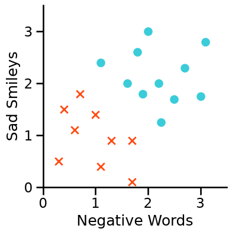
This figure does not show the response this time but two features!
Decision Boundary Example#
The model combines all features into a single score (weighted sum), then runs it through the sigmoid:
predicted probability = sigmoid(b0 + b1 × negative_words + b2 × sad_emojis)
b0 = intercept (baseline bias)
b1 = weight for negative words
b2 = weight for sad emojis
Each weight tells us how much each feature influences the final probability.
\(x\) is one observation. The index refers to different features:
\(x_0\) belongs to the bias and is 1 (so that \(b_0\) is the intercept).
\(x_1\) and \(x_2\) are the # of neg. words and smileys, resp.
Decision Boundary Example — Fitted Weights#
After training on our data, the model found these weights:
Parameter |
Value |
Meaning |
|---|---|---|
b0 |
-3 |
Baseline bias (low probability by default) |
b1 |
1 |
Each negative word adds 1 to the score |
b2 |
1 |
Each sad emoji adds 1 to the score |
Model: probability = sigmoid(-3 + negative_words + sad_emojis)
Decision Boundary Example#
With weights b = [-3, 1, 1]:
probability = sigmoid(-3 + negative_words + sad_emojis)
The model asks: “Do the combined signals (negative words + sad emojis) add up to more than 3?”
If yes → the probability crosses 0.5 → classified as “sad”.
Decision Boundary Example#
probability = sigmoid(-3 + negative_words + sad_emojis)
We predict “sad” (class 1) when:
negative_words + sad_emojis ≥ 3
The line negative_words + sad_emojis = 3 is the decision boundary — the line that separates the two classes in feature space.
Decision Boundary Example#
probability = sigmoid(-3 + x1 + x2)
Predict “sad” (class 1) when:
x1 + x2 ≥ 3
Predict “happy” (class 0) when:
x1 + x2 < 3
The decision boundary line is: x1 + x2 = 3
Decision Boundary Example#
probability = sigmoid(-3 + x1 + x2)
Predict “sad” (class 1) when:
x1 + x2 ≥ 3
Decision Boundary Example#
probability = sigmoid(-3 + x1 + x2)
Predict “sad” (class 1) when:
x1 + x2 ≥ 3
Predict “happy” (class 0) when:
x1 + x2 < 3
Decision Boundary Example#
Predict “sad” (class 1) when:
x1 + x2 ≥ 3
Predict “happy” (class 0) when:
x1 + x2 < 3
The Decision Boundary is the line:
x1 + x2 = 3
Everything above this line → classified as sad.
Everything below → classified as happy.
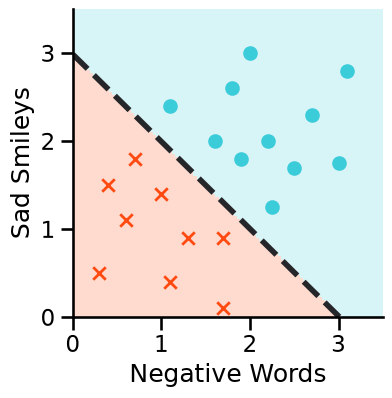
Decision Boundary — Key Insight#
The decision boundary is a property of the learned weights, not of the raw data.
The model is trained to find the best weights → that defines the boundary
Changing the threshold moves the boundary (more or less conservative)
With more complex features (e.g., non-linear combinations), the boundary can become curved — not just a straight line
PM Analogy: The model draws the line. You decide where to set the threshold. Data scientists find the best line; product managers decide the business policy on top of it.
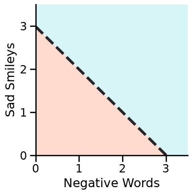
How Does the Model Learn?#
The model starts with random weights and improves them by measuring how wrong its predictions are.
The process:
Make a prediction (using current weights)
Measure the error → this is the loss
Adjust the weights to reduce the error
Repeat until the error is minimized
The mathematical function that measures how wrong the model is → called the cost function (or loss function).
PM Analogy: Like A/B testing with automated feedback. Each iteration the model “runs an experiment,” checks the results, and updates its strategy. The cost function is the KPI it’s optimizing.
The top numbers are no exponents but refer to the observation number here.
The Loss Function — Measuring How Wrong We Are#
For logistic regression the log loss (binary cross-entropy) is used.
The core intuition:
True label |
Prediction |
Loss |
|---|---|---|
0 (not sad) |
~0 (correctly confident) |
~ 0 (low penalty) |
0 (not sad) |
~1 (very wrong) |
Large penalty |
1 (sad) |
~1 (correctly confident) |
~ 0 (low penalty) |
1 (sad) |
~0 (very wrong) |
Large penalty |
The further the prediction is from reality, the larger the loss.
Smaller loss = better model.
PM Analogy: Like a customer satisfaction score — if the model confidently makes the right call, score is high. If it confidently makes the wrong call, score tanks hard. Uncertainty is penalized less than confident mistakes.
Why Not Use the Same Loss as Linear Regression?#
Linear regression uses a simple squared error loss.
But for logistic regression, using squared error creates a bumpy, non-convex loss landscape — the optimization algorithm (gradient descent) gets stuck in local valleys and may never find the best solution.
The log loss creates a smooth, convex loss landscape, which means gradient descent can reliably find the global minimum (the best weights).
PM Analogy: If your optimization algorithm is hiking to find the lowest valley, a convex landscape has one clear valley to aim for. A non-convex one has many fake valleys — the hiker might get stuck in the wrong one.

The Cost Function — Summary#
Linear regression loss: squared error → not suitable for logistic regression
Logistic regression needs a loss that is convex (one smooth valley to optimize)
The log loss achieves this
The log loss heavily penalizes confident wrong predictions and barely penalizes uncertain predictions.
This aligns with how we want the model to behave: confident = high stakes.
The Loss Function (Intuition)#
The loss for a single prediction works as follows:
Intuition (no math needed):
If the real label is 1 and the model predicted close to 1 → loss is near zero
If the real label is 1 but the model predicted close to 0 → loss is very large
Vice versa for class 0
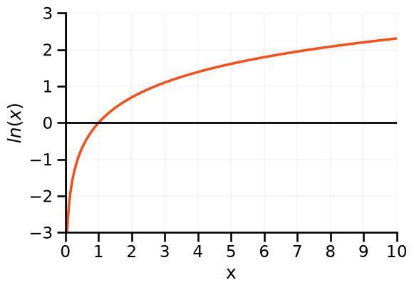
Loss for Class 1 Predictions#
For instances that truly belong to class 1:
Predicted probability close to 1 → loss is low (great prediction, small penalty)
Predicted probability close to 0 → loss is very high (terrible prediction, large penalty)
The model is punished harshly for missing a positive case with high confidence.
PM Analogy: If a cancer screening model is highly confident a patient is healthy but they’re actually sick — that’s the worst possible outcome. The loss function reflects this by applying a massive penalty.
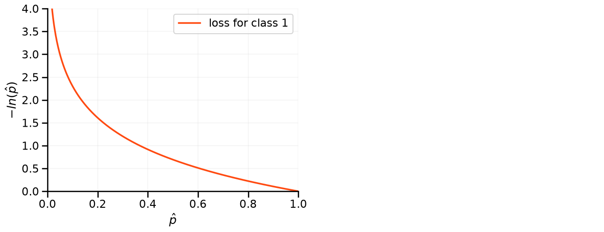
Loss for Class 0 Predictions#
For instances that truly belong to class 0:
Predicted probability close to 0 → loss is low (correctly confident “no”)
Predicted probability close to 1 → loss is very high (confidently said “yes” when it was “no”)
Together, both cases ensure the model is penalized most for confident mistakes.
PM Analogy: In a spam filter: confidently letting spam through = big loss. Confidently blocking a real email = big loss. The model learns to be accurate and calibrated.
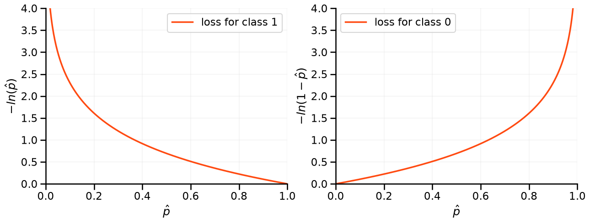
Combining the Two Cases#
We can write both cases (y=0 and y=1) as a single unified formula:
When y=1: the second term “switches off” (multiplied by 0).
When y=0: the first term “switches off” (multiplied by 0).
This is elegant — one formula handles both scenarios.
The Full Loss Formula (Binary Cross-Entropy)#
This is called the binary cross-entropy loss — the standard loss function for logistic regression.
Why it’s good:
Convex → reliable optimization
Penalizes confident mistakes heavily
Derived from the mathematically principled Maximum Likelihood Estimation (MLE)
PM Insight: This loss function is why logistic regression is well-calibrated — outputs are genuine probabilities, not just scores. That matters when you’re making decisions based on model confidence.
From Loss to Cost — Training the Model#
The cost function J(b) is just the average loss over all training observations:
To train the model:
Compute average loss for current weights
Adjust weights to reduce loss (using gradient descent)
Repeat until loss stops improving
The result: the model finds the weights b that make the best possible predictions on the training data.
PM Analogy: Think of it as continuously A/B testing your scoring rules, each round making a small improvement, until you converge on the best rule set.
Minimizing J — Finding the Best Weights#
Unlike linear regression, there is no exact algebraic solution to find the best weights
Instead, we use gradient descent — an iterative optimization algorithm
It takes small steps in the direction that reduces the loss the most, until it reaches the minimum
PM Analogy: Gradient descent is like blindfolded hiking. You can’t see the full landscape, but you can feel the slope under your feet. You always step downhill — eventually reaching the valley (the optimal weights).
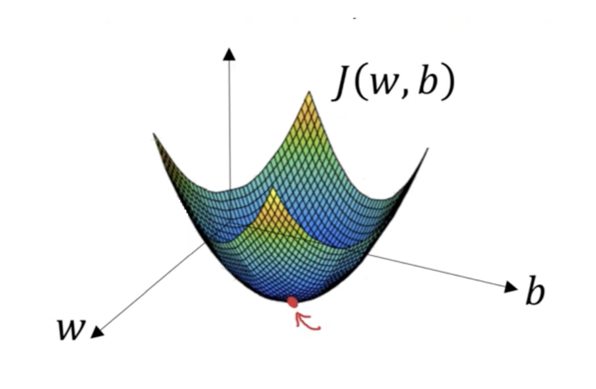
Conclusion#
Training the model = finding the weights that minimize the loss = defining the shape of the decision boundary.
Changing the threshold (from the default 0.5) = shifting where the boundary is applied = a business policy decision.
Data Science Team |
Product Manager |
|---|---|
Trains the model, finds best weights |
Decides the threshold for deployment |
Evaluates accuracy, precision, recall |
Decides which metric matters for the use case |
Tunes the model |
Sets acceptable false positive / negative rates |
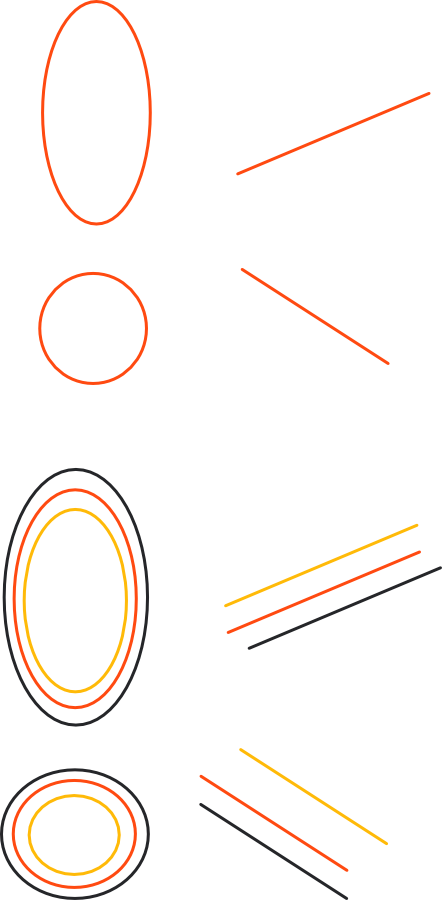
Multi-class Problems#
What if you have more than two classes? (e.g., classify support tickets into: billing / technical / general)
The standard approach is OvR (One vs. Rest):
Run one binary classifier per class
Each classifier asks: “Is this class X, or is it something else?”
The class with the highest probability wins
For 3 classes → 3 separate classifiers trained:
billing vs. (technical ∪ general)
technical vs. (billing ∪ general)
general vs. (billing ∪ technical)
PM Analogy: Like routing a call center — first ask “is this a billing issue?”, then “is this technical?”, etc. The most confident match determines where the ticket goes.
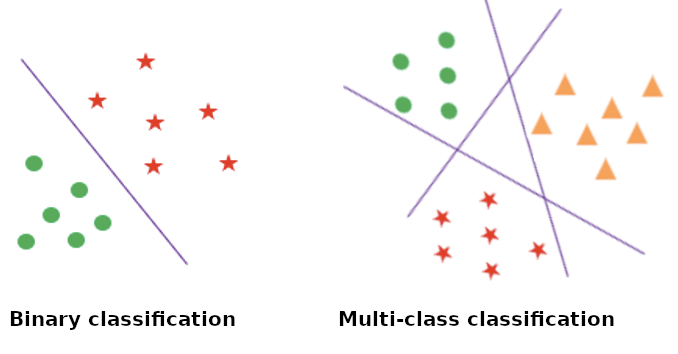